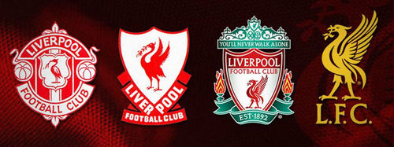

创立初期
利物浦足球球队成立于1892年，由约翰·霍丁创立。球队的成立是在安菲尔德球场的拥有者约翰·霍丁与埃弗顿足球球队之间发生了一次涉及多方面原因的争执之后。

利物浦足球俱乐部队，简称利物浦队，是英格兰足球超级联赛的球队之一。球队位于英格兰西北默西赛德郡港口城市利物浦，于1892年成立，是英格兰的一支足球俱乐部。
利物浦是英格兰足球历史上最成功的俱乐部之一，也是欧洲乃至世界最成功的足球俱乐部之一 。利物浦一共夺取过18次英格兰甲级联赛冠军、7次英格兰足总杯冠军、8次英格兰联赛杯冠军、5次欧洲冠军联赛冠军以及3次欧洲联盟杯冠军，也曾为已解散的G-14创立成员，乃是英格兰历史上最成功的球队之一。
一支经历了历史洗礼的豪门球队
利物浦足球球队成立于1892年，由约翰·霍丁创立。球队的成立是在安菲尔德球场的拥有者约翰·霍丁与埃弗顿足球球队之间发生了一次涉及多方面原因的争执之后。
在1900-01赛季，利物浦球队获得了第一个顶级联赛冠军头衔。在1953-54赛季，利物浦球队降级到了乙级联赛
1961-62赛季，利物浦重返英格兰足球甲级联赛，在17年后的1963-64赛季重新举起了甲级联赛的冠军奖杯。1965年利物浦球队是首次赢得足总杯的冠军，并在1965-66赛季第7次赢得了联赛冠军。1972-73赛季，利物浦获得了联赛冠军和欧洲联盟杯冠军。
1985年，利物浦再次闯入欧洲冠军杯决赛。比赛在海瑟尔体育场举行，对手是尤文图斯。在比赛开始前，惨案发生了海瑟尔惨案。随后利物浦的成功却因为另一场灾难——希尔斯堡惨案蒙上了阴影
埃文斯执教期间仅获得1995年一个英格兰联赛杯冠军。唯一一个亮点是1996年4月3日在安菲尔德球场进行的一场利物浦4-3击败纽卡斯尔联足球球队的比赛，该比赛被评为英超十年最佳比赛。
在2005年欧洲冠军杯决赛的点球大战中以3-2击败意大利AC米兰球队（90分钟比赛内双方战成3-3，加时赛也未能分出胜负），第五次捧起了欧冠的冠军奖杯
Lid est laborum dolo rumes fugats untras. Etharums ser quidem rerum facilis dolores tium, totam rem aperiam, eaque ipsa quae ab illo inventore veritatis et quasi archgit, magnam aliquam quaerat voluptatem. Asunt in anim uis aute irure dolor ins. Etharums ser quidem rerum facilis dolores nemis omnis fugats vitaes ser.
始建于1884年的安菲尔德球场历史悠久，安菲尔德球场最初为利物浦同城球队埃弗顿的主场，1892年，随着该球队不断发展壮大，场地的出租费用越来越高，因此埃弗顿队决定搬出。尽管可以容纳大量观众，但安菲尔德一度成为了没有球队的空馆
1892年开始成为利物浦的主场。安菲尔德4面看台分别名为安菲尔德路看台、百年看台、Kop看台以及主看台。其中安菲尔德路看台以及百年看台为两层，Kop看台以及主看台为一层。保留安菲尔德球场的名称，而将主看台用于商业冠名。安菲尔德球场其他三面还有双层的百年看台，是为纪念利物浦俱乐部百年大庆改造过的；安菲尔德路看台则是提供给客队球迷，同时还有专供残疾人的轮椅座位；主看台则是电视转播席、记者席、贵宾包厢、球员休息室和替补席所在的看台
2014年4月，利物浦俱乐部与利物浦市政厅及Your Housing集团达成协议，将投资2.6亿英镑对安菲尔德球场进行扩建，扩建将分两期进行，首期增加8250个坐席，第2期增加4825个坐席，最终将安菲尔德的总容量扩充到59000人。其中首期的任务恰恰就是扩建单层的主看台，仅扩建主看台，就将耗资7500万英镑
利物浦球队的传统比赛服是红色和白色，但是在球队成立初期，当球队从埃弗顿足球球队接手安菲尔德球场时，他们继承了埃弗顿的蓝色和白色。当时，他们的主场球衣几乎与埃弗顿队的球衣颜色相同。到1894年，利物浦球队开始使用红色上衣、白色短裤作为主场比赛服。
直到20世纪60年代中期利物浦球队才开始改穿全身红色的主场球衣。利物浦的客场球衣则是传统的白色上衣和黑色短裤，也有时是黄色的。然而，在1987年，球队引入了灰色的队服，这套队服一直沿用到球队百年的1991-92赛季，然后被一套绿色的上衣、白色的短裤所取代。在20世纪90年代，经过了一系列的不同颜色的客场球衣的变换，其中包括金色、海军蓝色，明黄色，黑色和灰色，以及淡褐色，球队客场队服又在黄色和白色之间交替变换，直到2008-2009赛季，他们又重新穿上了灰色的队服
从2006年开始，阿迪达斯取代了锐步成为红军的球衣提供商，为此这家著名体育品牌每年支付利物浦1000万英镑的赞助费用。阿迪达斯公司曾在1985-1996年间为利物浦队设计球衣。该球队的球衣设计工作还曾交给另外两家公司完成，分别是茵宝（Umbro）公司（1985年之前）和锐步（Reebok）公司（1996-2006年）
利物浦是第一支在队服上印有赞助商标志的英格兰职业足球乐部，他们在1979年与日立（Hitachi）达成协议，日立标志在他们的队服上出现。之后他们的赞助商还有：皇冠漆业集团（Crown Paints）、卡迪电器（Candy）、嘉士伯（Carlsberg） 以及标准渣打银行（Standard Chartered Bank）。其中与嘉士伯在1992年签订的合同是英格兰顶级足球联赛中最长的一份合同。与嘉士伯的合约到2010-2011赛季结终止，取代嘉士伯的是赞助商标准渣打银行。
2011年4月22日，美国运动用品制造商“勇士体育”将取代阿迪达斯成为红军的新球衣赞助者，这家美国品牌每个赛季将支付红军2500万英镑的赞助费用，这是阿迪达斯赞助金额的两倍还多。这也使得利物浦超越了曼联与耐克签订的每年2350万英镑的合同，成为英超球队中球衣赞助收入最高的球队。得到这份球衣赞助合同后，再加上此前同渣打银行签订的每年2000万英镑的球衣胸前广告合同，利物浦每个赛季将会在球衣方面获得4500万英镑的收入
利物浦标志上最醒目的是盾牌上的利弗鸟，盾牌上部是著名的香克利大门，其上标有利物浦的经典圣歌“You'll Never Walk Alone”。队徽两侧的火焰图案是为了纪念希尔斯堡惨案而设，俱乐部希望烈火永远燃烧，球队与惨案中的遇难者同在。底部的1892表示球队的建队时间。同时利物浦是英国第一支在球衣上印有赞助标志的职业俱乐部

利物浦球队的队歌是《You'll Never Walk Alone》。这首歌曲源于由理查德·罗杰斯作曲、奥斯卡·哈姆斯特恩作词的一出百老汇音乐剧《旋转木马》，后来被利物浦音乐家“格里和带头人”乐队收录在他们的专辑中。
自从20世纪60年代这首歌就被利物浦球迷在安菲尔德球场齐声高唱。1982年8月2日为了纪念比尔·香克利，队歌的歌名被“搬到”了香克利大门上。之后这座写有“You'll Never Walk Alone”的香克利大门还成为了利物浦队徽的一部分。
英格兰顶级联赛： 1900-01，1905-06，1921-22，1922-23，1946-47，1963-64，1965-66，1972-73，1975-76，1976-77，1978-79，1979-80，1981-82，1982-83，1983-84，1985-86，1987-88，1989-90
英格兰足总杯 1965，1974，1986，1989，1992，2001，2006
英格兰联赛杯 1981，1982，1983，1984，1995，2001，2003，2012
欧洲冠军联赛（欧洲冠军杯） 1976-77，1977-78，1980-81，1983-84，2004-05